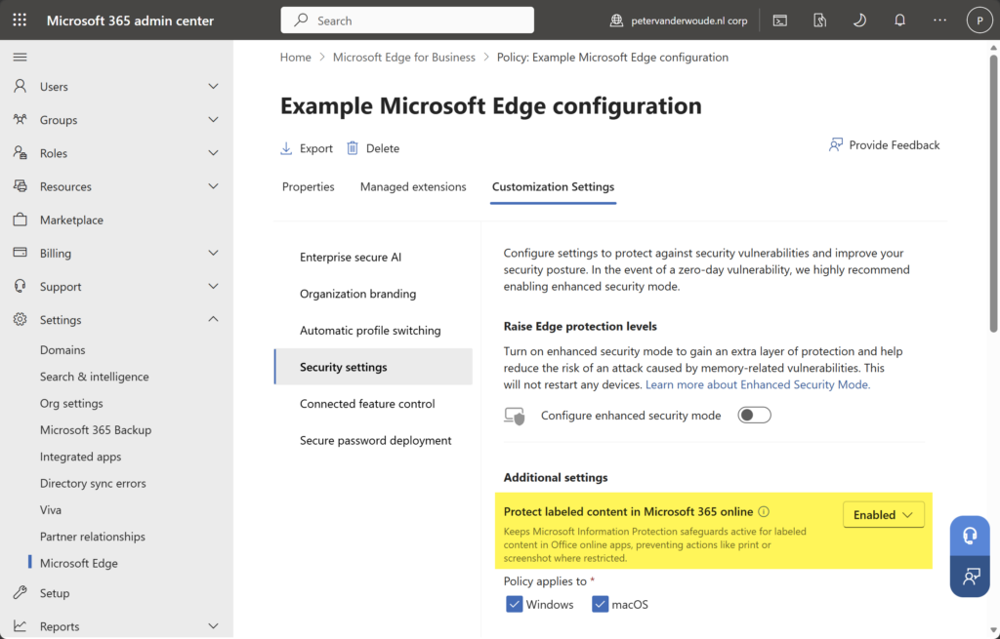
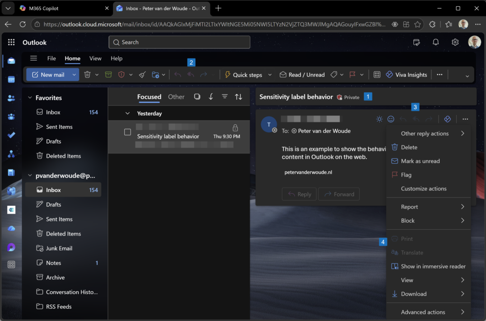

This week is all about Microsoft Edge. More specifically, this week is all about even using sensitivity labels for protecting Microsoft 365 online apps in Microsoft Edge. Sensitivity labels on itself are nothing new, using it in Microsoft 365 online apps not either, but support for using it in Outlook on the web is. The basics of sensitivity labels are still the same. After applying a sensitivity label, the IT administrator can prevent actions like copying, pasting, taking screenshots, forwarding emails, replying to emails, and more. Initially that functionality was only available in Microsoft 365 desktop applications, and now slowly moved towards Microsoft 365 online apps via Microsoft Edge. Within Microsoft Edge, that same behavior can now be enforced. Of course that does require the usage of Microsoft Edge and actually enforcing that for consistent and predictable behavior. This post will look closer at the ability of protecting labeled content in Microsoft 365 online apps, the configuration and the user experience.
Note: The configuration of protecting labeled content is only available via Microsoft Edge management service.
Configuring protecting labeled content in Microsoft 365 online apps
When looking at the protecting labeled content in Microsoft 365 online apps, it is good to first understand some of the technical details. An important detail is that the feature is directly integrated into the Microsoft Edge management service. That is the place for the configuration, and that configuration is only available for the cloud policy type. The configuration is actually a really straightforward setting that keeps the safeguards active for labeled content in Microsoft 365 online apps. The configuration is available via the Customizations Settings tab on cloud policies in the Microsoft Edge management service. The following steps walk through the creation of a clear cloud policy that further does nothing.
- Open the Microsoft 365 admin center portal and navigate to Setting > Microsoft Edge
- On the Microsoft Edge for Business page, navigate to the Configuration policies tab and click Create policy
- On the Basics page, provide at least a unique name to distinguish it from similar profiles, select Windows, select Cloud as the policy type, and click Next
- On the Settings page, add no settings and click Next
- On the Extensions page, configure no settings and click Next
- On the Assignments page, add the required group assignment and click Next
- On the Finish page, review the configuration and click Review and create
Note: Alternatively, it is also possible the reuse an existing cloud policy for the labeled content feature.
After creating the new cloud policy in the Microsoft Edge management service, that new policy can be used for enabling the secure password deployment feature and specifying the secure passwords. The following steps walk through the required steps.
- Open the Microsoft 365 admin center portal and navigate to Setting > Microsoft Edge
- On the Microsoft Edge for Business page, navigate to the Configuration policies tab and select the just created policy
- Navigate to the Customizations Settings tab of the just created policy and select the Security setting section
- In the Additional settings section, as shown below in Figure 1, select Enabled with Protect labeled content in Microsoft 365 online and click Save
{kind=link}

Note: The functionality of protecting labeled content in Outlook on the web requires Microsoft Edge version 147.
Experiencing labeled content using Microsoft Edge
When the configuration for protecting labeled content in Microsoft 365 online apps is in place, it is pretty straightforward to experience the behavior. Of course it is important that the right environment is created for the user to keep a closed loop. That means that it is important to direct the user to Microsoft Edge. And that can be achieved by using Defender for Cloud Apps and/or Conditional Access in combination with app protection policies. In the end, the can experience the latest experience with Outlook on the web by opening Microsoft Edge and navigating https://outlook.cloud.microsoft. When an email is labeled with a label that limits the user experience that will directly reflect in the browser session, as shown below in Figure 2. It clearly shows that the label is applied (1), that the reply, reply all, and forward options are disabled (2, 3), and that it is not possible to print (4).
{kind=link}

Note: It is also possible to block copy, paste and screenshots, but that made it challenging to show the behavior.
More information
For more information about protecting Microsoft 365 Online in Microsoft Edge, refer to the following docs.
Discover more from All about Microsoft Intune
Subscribe to get the latest posts sent to your email.